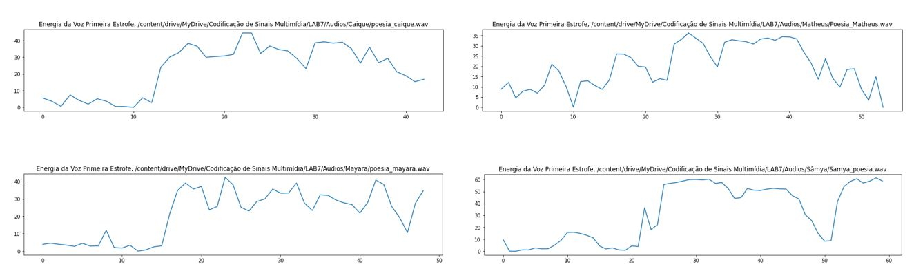

Codificação de Voz e Áudio
Codificação de Sinais Multimídia - Laboratório 7
Primeiramente, os trabalhos com o Google Colab foram iniciados. Entre os principais objetivos temos: Determinar os parâmetros LPC; realização da separação Sonora/Surda; Espectro e Envoltória LP; Estimar f0 e Pitch.
Resultados Individuais
Como descrito no objetivo, cada integrante gravou seus arquivos de áudio e realizou todos os procedimentos necessários. Clique em um dos botões para acessar os resultados obtidos:
Conclusões Gerais
Inicialmente, a Energia da Voz obtida por cada integrante na primeira estrofe foi analisada e comparada:
Caíque e Matheus
Mayara e Sâmya
Ao observar o comportamento do gráfico do Caíque, a energia da voz começa baixa, sobe consideravelmente, oscila por um período e começa a cair; do mesmo modo, para a primeira estrofe da Mayara e Sâmya, a energia da voz apresenta o mesmo comportamento, diferenciando apenas no final que após uma queda nos valores, a energia sobe novamente. Para o Matheus, é possível constatar que apesar da oscilação na energia até o final da primeira estrofe, o comportamento se assemelha ao que foi antes visto com Caíque, visto que a energia se encontrou baixa inicialmente, tendeu a subir e após um período de oscilação, começou a cair aos poucos.
Além disso, ao analisar a Frequência Fundamental Estimada, foi possível perceber que os resultados de Matheus e Mayara foram maiores que os de Caíque e Sâmya. Para Matheus e Mayara, o f0 é foi próximo de 200 Hz e 256 Hz, respectivamente. Enquanto isso, para Sâmya e Caíque, aproximadamente 180 Hz e 128 Hz. Essa análise pôde ser realizada com o auxílio dos espectogramas de cada integrante.